STM32不像51单片机一类的可以直接使用proteus来软件模拟，很多时候是使用硬件仿真的，所以需要使用到J-Link。千里之行始于足下，首先就要学会使用J-Link为STM32下载程序。
STM32使用J-Link下载程序还有一个好处就是，不需要手动去拨动BOOT0来选择启动模式。使用J-Link下载程序，所有步骤都可以在PC端操作完成，最后只要按一下板子上的RST键就可以运行了（适当配置以后，可以不按RST键直接运行）。
===================阶段一：J-Link安装驱动===================
首先肯定要有一个J-Link，长这个样子：
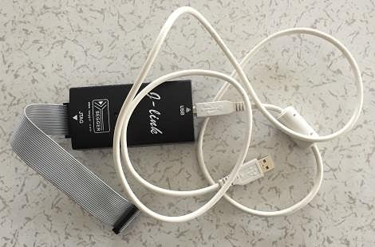
一端是20脚的排线，一端是USB口。
将USB口插入电脑。然后再设备管理器中查看是否能够检测到JLink设备。如果已经安装了驱动程序，那么是能够看到如下一项的：
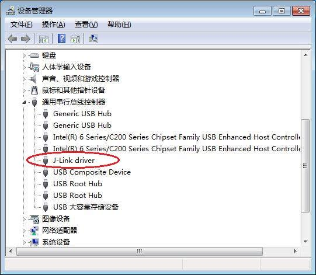
如果没有安装驱动程序，那么会看到这样的图像：
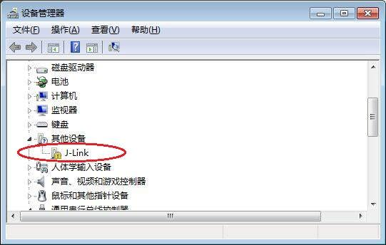
并且J-Link上面的一盏小绿灯也会闪烁不停。
驱动程序可以使用Jlink驱动程序.zip中的exe文件安装。安装过程很简单，在此不累述了。唯一需要注意的是，当程序安装完毕之后，会弹出一个对话框：
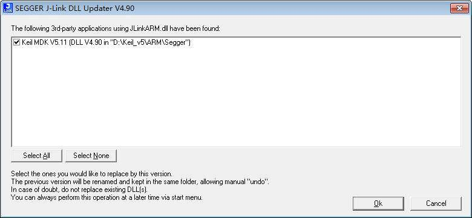
要记得勾选那个选项，这样Keil MDK才能使用J-Link。
=================阶段二：在Keil MDK5中编写测试代码================
本次示例代码是运行在STM32F103C8上面的。这个型号是各种教程里面最常用的，也是意法半导体最流行的型号了。这块板子长这个样子：
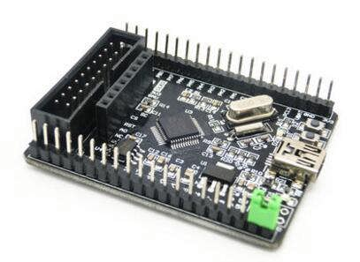
我买的是最简开发板，所以引脚比较少。
这段测试代码的目标就是，驱动一个LED小灯，让它不断闪烁。这个LED连接在PA5引脚上。
代码如下：
main.c
#include "stm32f10x_rcc.h"
#include "stm32f10x_gpio.h"
void led_init()
{
GPIO_InitTypeDef t_gpio;
RCC_APB2PeriphClockCmd(RCC_APB2Periph_GPIOA,ENABLE);
t_gpio.GPIO_Pin=GPIO_Pin_5;
t_gpio.GPIO_Mode=GPIO_Mode_Out_PP;
t_gpio.GPIO_Speed=GPIO_Speed_10MHz;
GPIO_Init(GPIOA,&t_gpio);
}
void delay(u32 p_count)
{
while(p_count--);
}
int main()
{
led_init();
while(1)
{
GPIO_SetBits(GPIOA,GPIO_Pin_5);
delay(0x0FFFFF);
GPIO_ResetBits(GPIOA,GPIO_Pin_5);
delay(0x0FFFFF);
}
}
代码很简单，就是在led_init函数中，开启PA5的时钟，把PA5引脚设置为推挽输出、最大翻转频率为10Mhz。
STM32F10X系列单片机的工程模板可以下载stm32f10x_template.zip。下载解压后，直接把user目录中的main.c替换成上述内容即可编译通过。
==================阶段三：下载程序到STM32====================
程序编译通过以后，就可以把程序下载如板子了。这里有个比较坑的地方是，J-Link居然不会给板子供电，也就是说，需要用usb线或者其他方式给STM32F103供电。于是乎，连线有点多啊，电脑连JLink的usb口，Jlink的排线连STM32的排阵，同时在来一根usb线给STM32供电。实测发现，JLink的usb与供电的usb并不需要“共同地”，应该是JLink内部和STM32进行了“共同地”。连线如下：
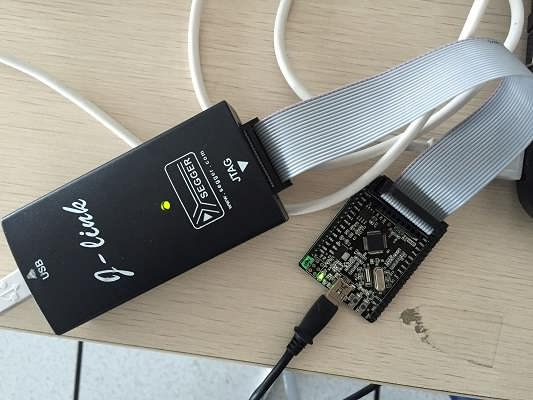
接下来就需要在Keil MDK5中配置JLink：
（1）点击菜单 Project => Options for Target ‘Targer 1’…：
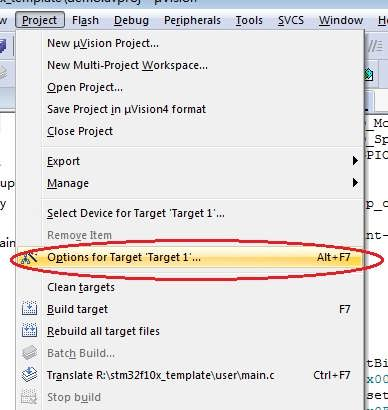
（2）在弹出的对话框中，选择Debug选项卡，然后将Use下拉框中的内容改为“J-LINK / J-TRACE Cortex”：
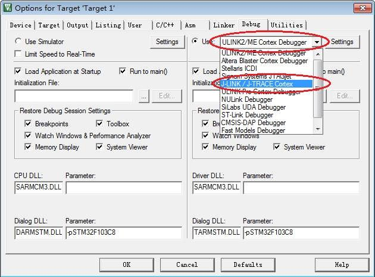
（3）接着选择Utilities选项卡，点击“–Use Debug Driver–” 旁边的Settings按钮：
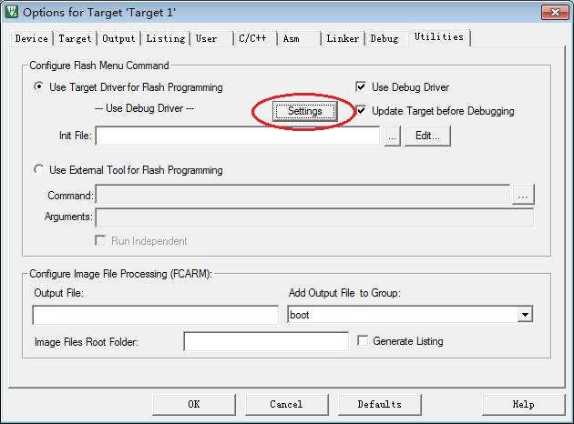
（4）在弹出的对话框中，勾选”Reset and Run”：
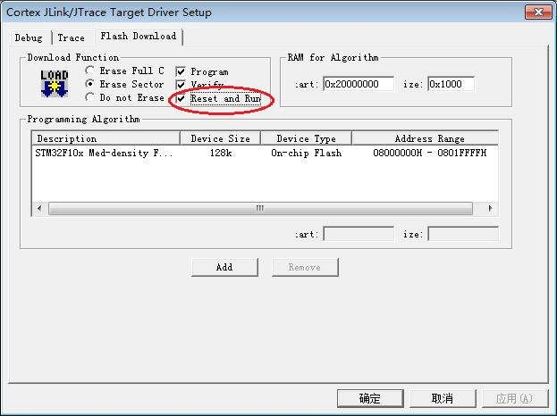
该选项的意思是下载完就让板子从头开始运行。如果不勾选，需要手动给板子一个Reset信号。
点击确定之后，J-Link就设置完成了。
要下载程序，只需要点击主界面上的“Load”按钮：
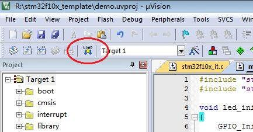
于是就可以看见程序烧写入了板子：
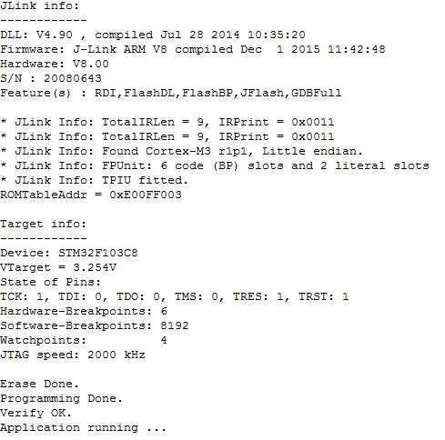
========================阶段四：搭建电路运行====================
其实这一节不写也无所谓了，因为文章的主题只是用J-Link写入程序。不过为了完美，还是看看程序运行后的样子吧。
根据代码，LED是接在PA5上面的，至于“阳极接VCC、阴极接PA5”还是“阳极接PA5、阴极接GND”无所谓，反正是推挽输出。我用的是后者，毕竟更加符合逻辑。于是电路为：PA5引脚 ====> 1K电阻 ====> 发光二极管 ====>GND，运行之后，LED闪烁~
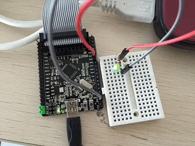